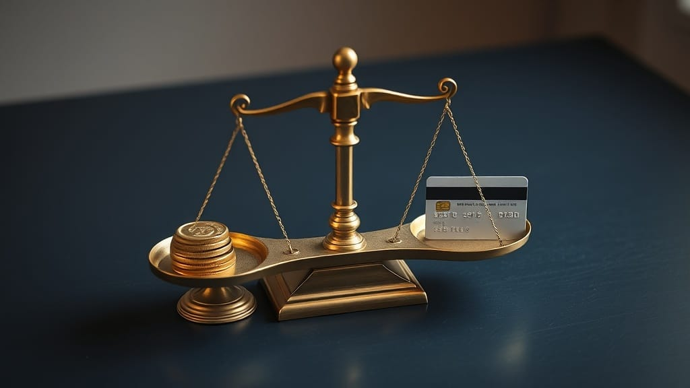

Pay Off Debt or Save? The 2026 Math That Settles It
Pay off debt or save in 2026? Your card charges 22% while savings pays 4.5%. The exact order to follow, plus the two times saving actually wins.
Z Zar · 25 Jun 2026 — 3 min read

Budget & Debt Guide · Money Decisions · full guide →
Here is the question that quietly stresses out almost everyone with a little money left over at the end of the month: should you throw it at your debt, or stash it in savings? It feels like a values question — responsible vs. cautious — but in 2026 it is mostly a math question, and the math is louder than it has been in years. Let us settle it.
| What you owe / hold | 2026 rate | What it means |
|---|---|---|
| Credit card balance | ~22% APR | Costs you ~22% a year, guaranteed |
| High-yield savings | ~4.5% APY | Pays you ~4.5%, before tax |
| The gap | ~17 points | Every $1 of card debt you keep is costing you far more than savings earns |
The 2026 reality
Why the answer is different this year
For most of the 2010s, this debate was genuinely close. Card rates were lower, savings paid almost nothing, and you could argue either side. Not anymore. In 2026 the average credit card charges around 22% APR, while even the best high-yield savings accounts pay about 4.5%. That gap — roughly 17 percentage points — is the whole ballgame. Paying down a card balance is a guaranteed, tax-free 22% return. There is no investment on earth that reliably beats that. The average American now carries about $6,580 in card debt, which means a lot of people are effectively losing over $1,400 a year to interest while patting themselves on the back for the $200 sitting in savings earning $9.
Do this, in order
The order that actually works
So does that mean drain every dollar into your debt? No — and this is where the “just pay it all off” crowd gets it wrong. Go bankrupt-proof first, then go interest-free. Here is the order we stand behind:
- Step 1 — A starter emergency fund ($1,000–$2,000). Not six months. Just enough that the next flat tire goes on a debit card, not back onto the 22% card you are trying to kill. Skip this and you will yo-yo forever.
- Step 2 — Attack high-interest debt like it is on fire. Anything above ~8% (almost always credit cards) gets every spare dollar. Highest rate first — the avalanche approach we lay out here saves you the most. If you need motivation more than math, the snowball method is a fine trade.
- Step 3 — Build the real emergency fund (3–6 months). Now you save, in a real high-yield account paying ~4.5%, because the expensive debt is gone.
- Step 4 — Invest and chase goals. Once your money is no longer leaking out at 22%, every dollar finally works for you instead of the bank.
The exceptions
When saving first actually wins
Two honest exceptions, because dogma is how people make bad money decisions. First: low-rate, fixed debt. If you have a mortgage at 3% or a student loan at 4%, do not rush to kill it — your 4.5% savings account literally out-earns it, so save and invest instead. Second: a 401(k) match. If your employer matches contributions, that is an instant 50–100% return that even 22% debt cannot beat. Grab the full match, then go back to the debt. Everything in between — the high-interest stuff — is where the 2026 math is brutal and clear.
The thing nobody tells you: this is not really about money discipline. It is about which interest rate is winning. Right now, in 2026, the card company is winning by 17 points a month. Take that back first, and the “save more” part gets dramatically easier — because you are no longer pouring money into a 22% hole. Tell us where you are in the four steps; reply to the email or drop a comment.
The bottom line
In 2026, if you are carrying credit card debt, paying it off is the highest-return, lowest-risk move available to you — full stop. Keep a small cash cushion so you do not relapse, grab any 401(k) match, leave cheap fixed debt alone, and otherwise point every spare dollar at the 22% balance until it is gone. Then save like crazy. The math is not close this year. Let it make the decision for you.
Disclosure: reader-supported, may earn affiliate commissions. Rates (≈22% card APR, ≈4.5% savings APY) accurate as of June 2026; confirm current figures. Not financial advice.